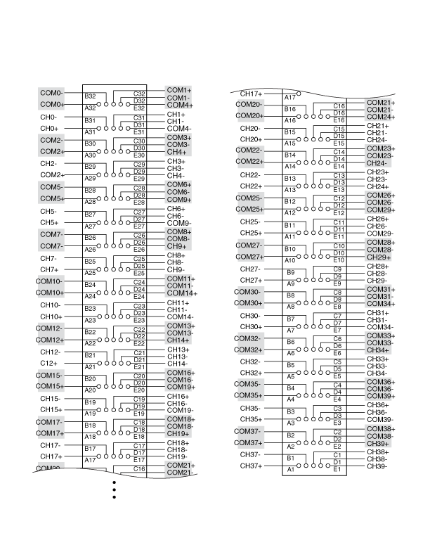

The following figure represents the NI PXI-2521 in the 40-DPST topology.
You can control the channels using the niSwitch Connect Channels VI or the niSwitch_Connect function.
For example, to close the relay of channel 2, call niSwitch_Connect(vi, "ch2", "com2"). To open the relay of channel 2, call niSwitch_Disconnect(vi, "ch2", "com2").
When scanning the NI PXI-2521, a typical scan list entry could be ch2->com2;. This entry closes the relay between CH2 and COM2.
The following figure identifies the pins for the NI PXI-2521 in the 40-DPST topology.
